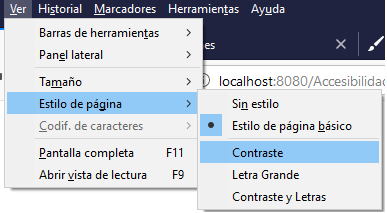

Aquí mostramos las diferentes formas que el usuario puede visualizar la web en caso de que tenga dificultades a la hora de visualizarla:
Para entrar en el modo accesible tienes que seleccionar la pestaña de Ver : Estilo de pagina. A continuación mostrará diferentes modos:

Contraste
La pagina web pasará a tener un color negro de fondo y texto en contraste blanco. Los botones cambiarán tambien de color junto a los formularios.
Letra grande
La pagina web pasará a un tamaño de texto mayor.
Letra grande y contraste
La pagina web pasará a tener un color negro de fondo, texto en contraste blanco y un tamaño de texto mayor.